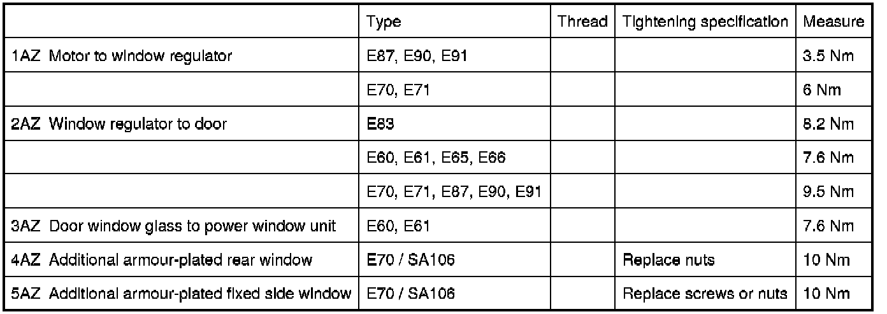

Operation CHARM
: Car repair manuals for everyone.
Home
>>
BMW
>>
2007
>>
X3 3.0si (E83) L6-3.0L (N52K)
>>
Repair and Diagnosis
>>
Windows and Glass
>>
Windows
>>
Power Window Motor
>>
Rear Door Window Motor
>>
Specifications
Rear Door Window Motor: Specifications
51 35 Power windows, rear
